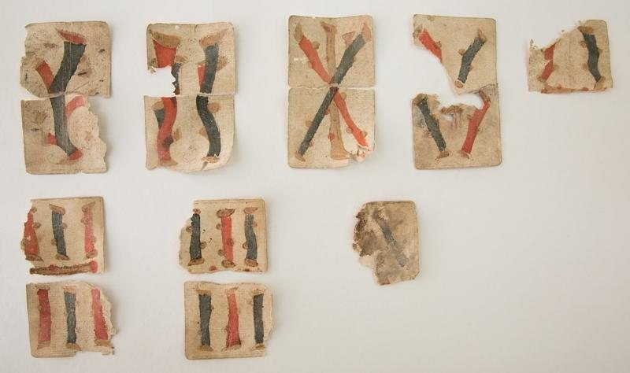
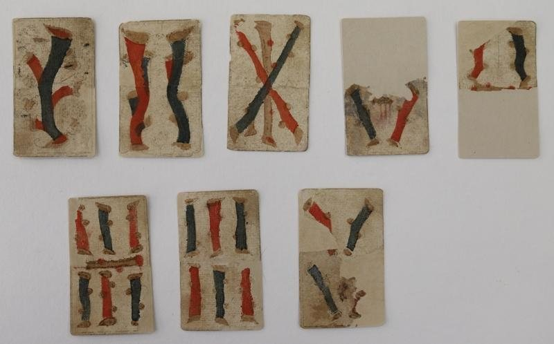
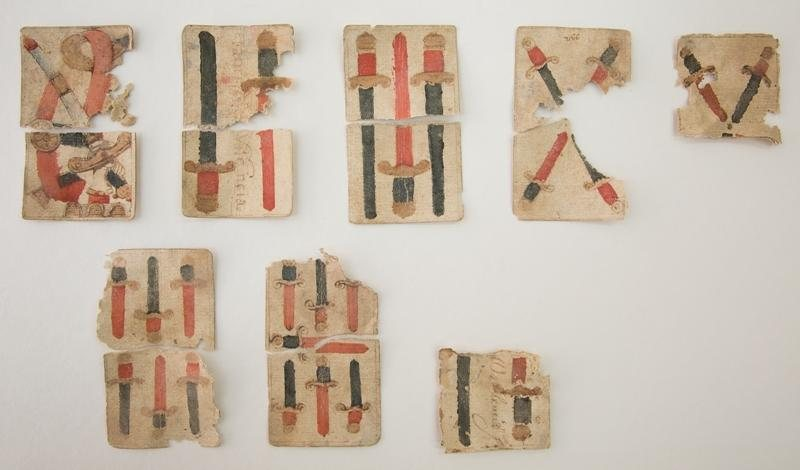
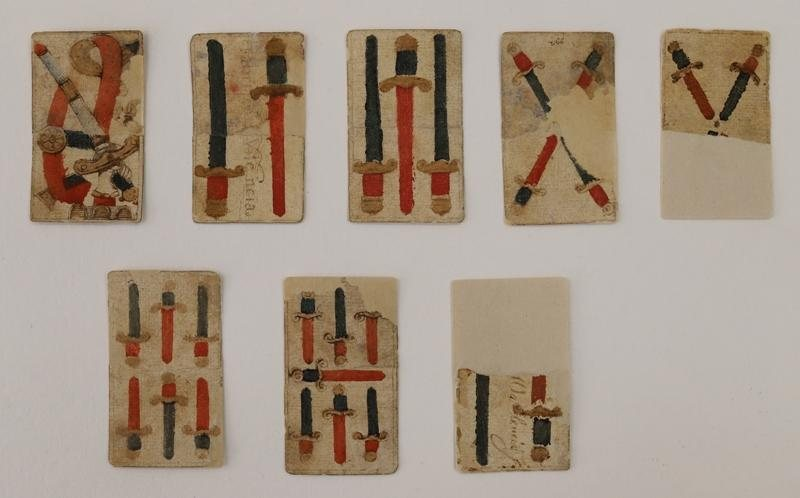
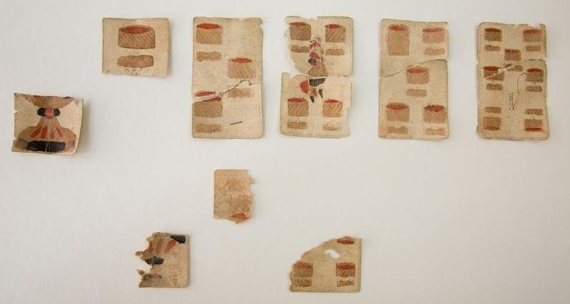
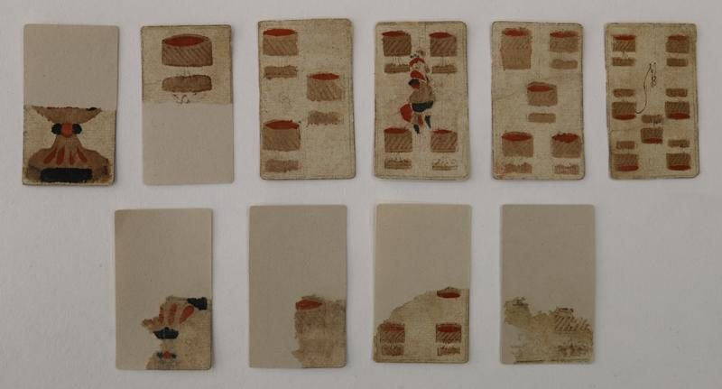
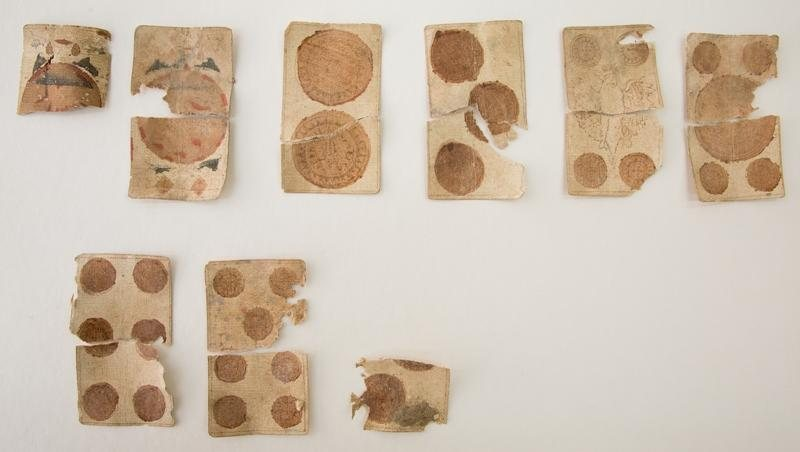
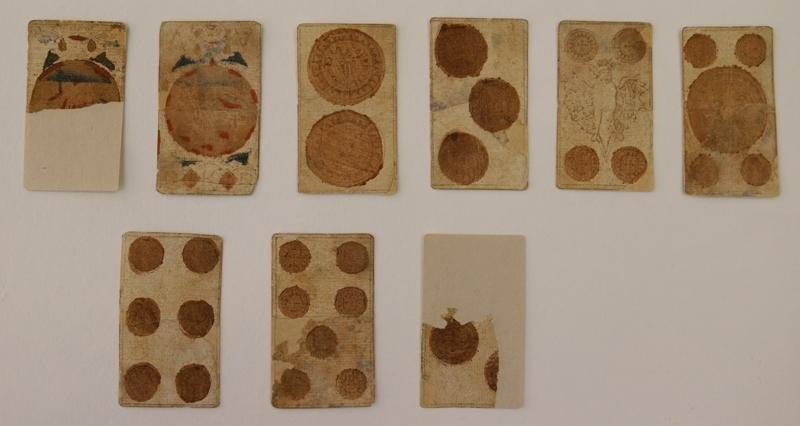

Resultado
Antes y después
Elige una carta y desliza el control para comparar su estado inicial y final.
Arrastra o usa las flechas del teclado
Conjuntos por palo

Bastos antes

Bastos después

Espadas antes

Espadas después

Copas antes

Copas después

Oros antes

Oros después